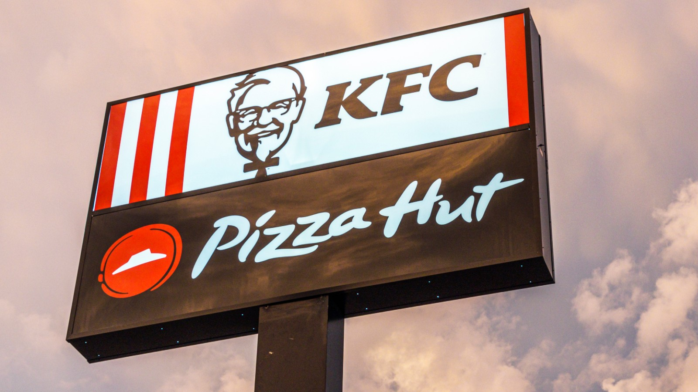

Next, I'm started to work at Pizza because of this pandemic. I've been working at Pizza since february 2021. Because of we cannot go to our campus, I'm starting to find another job and I work at pizza. At first, I wanted to work at KFC again. Unfortunately, it is full. So, I need to find another part time job and I got my part time job at pizza. I really love to working at this two places. But, I'm more prefer work at Pizza because the job is not hard as i work at KFC. Lastly, I've gained many knowledge at my part time job and I'm happy because the environment at Pizza are positive and always bring me joy and no stress when I'm working.